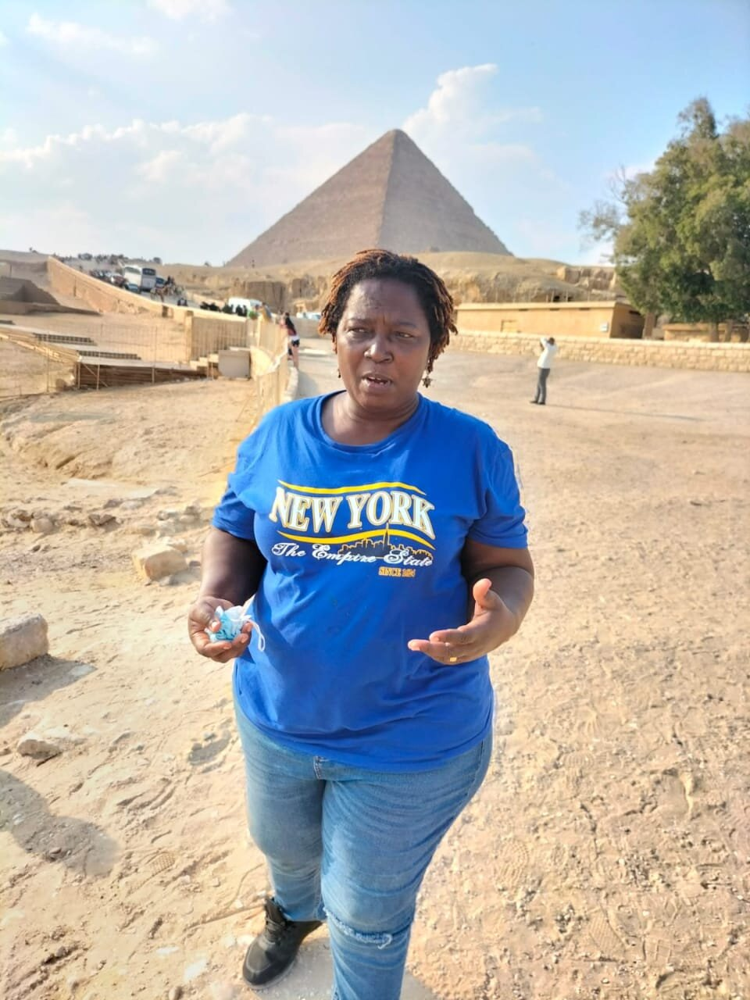

welcome to Akua Agyeiwaa's webpage!
This is a work is part of a Digital humanities project that aims at archiving liteary sources in various forms. In this work, we shall review three texts from West African, South and Central Africa. Various sources are used in analysing the identified themes. It is hoped that his project will add to the discourse on archiving African literatureThis website explores the intersection between religion, colonization and the identity of the colonial citizens as represented in texts from the Gold Coast, now Ghana, South Africa, Lesotho and Nigeria. These texts include three novels: Casely Hayford’s (1911) Ethiopia Unbound, Solomon Plaatje’s (1930) Mhudi and Thomas Mofolo’s (1931) Chaka. Aside the novels, the project features recovered texts from Samuel Ajayi Crowther (1866, 1867), Bye Weah (24 January 1876, 7 March 1876), James MacQueen, Saeid Lief Ben; Thomas Wogga (1845) and Frederick Douglass, (9 May 1846). Also included in the discussion are scholarly periodicals from Samuel Johnson (1875), John Philips (1823) and Aga Salim (1853), all retrieved from one more voice. The project on this website is a unique resource because of the three-dimensional analysis involving novels, recovered texts and periodicals. Often, research of these critical areas in African studies focuses on a single genre plus critical text to draw a conclusion. However, in this work, we base our analysis on novels, recovered scholarly texts and periodicals. That way, the results and conclusions would represent a holistic approach, which is the import of the epigraph. The in-depth analyses of the intersectionality between religion, colonization and identity fills a crucial gap in African studies. This website would be an invaluable resource for anyone interested in the above themes.
The researcher, Akua Agyeiwaa Manieson is a first year PhD candidate at the University of Nebraka, Lincoln, USA. Akua has several years teaching and reseaching at higher levels of education in Ghana. This project on researching and archiving African digital sources is of great interest to Akua, and she hopes that through such projects, she would be able to help archive various African liteary texts
Human society is changing at a high-speed rate, and so does technology. Therefore, there is the need to pace up with the changing times, incorporating technological devices into studying humanities. However, to do so successfully, collaboration and innovation are critical in digitally representing the unrepresented. In this work, I promise to acknowledge the efforts of all involved, no matter how small their contribution. I thank Jun, Tina Lee, Thara and Bret for their input in shaping my work. Again, we must acknowledge that the issues raised on this website are not sacrosanct to the settings of the texts. Any researcher in colonial literature would realize that the issues raised above have bearings on almost all colonial societies. However, discussions stand out because of the three-dimensional treatment of the selected themes, using texts, novels, recovered texts and periodicals to analyze the identified themes. In building this project, I will use Html and CSS and hope my website can endure for a long time. I am also aware that other scholars and critics may extract information from this website and assess the credibility of the information herein presented. Based on this awareness, I reiterate that the information and viewpoints presented herein are an unbiased personal assessment of the texts for this analysis.
Again, building a website from scratch is a dream come true, and that is one of the many reasons I am overly in love with DH. Often, I have been told all manner of myths about ‘coding’ and how technologically difficult it is. However, with minimal computing, I am facing one of my biggest fears. It would present a considerable triumph when I finally upload the results of my research findings on my website. After this project, the rest of my research life shall be dedicated to building and launching DH projects focusing on African literature.